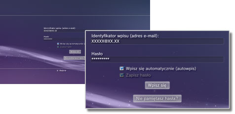

PlayStation™Network > Zapisywanie hasła / automatyczne logowanie
Zapisywanie hasła / automatyczne logowanie
Aby używać tej funkcji, może być konieczne zaktualizowanie oprogramowania systemowego.
Jeśli hasło zostanie zapisane, pole hasła na ekranie logowania będzie już wypełnione. Jeśli zostanie również ustawiona opcja automatycznego logowania, po włączeniu konsoli PS3™ będzie ona automatycznie przeprowadzać logowanie w sieci PSNSM.
Informacje
- Zapisanie hasła może umożliwić innym osobom korzystanie z usług PSNSM lub przeglądanie innych informacji dotyczących konta użytkownika.
- Przed przekazaniem systemu PS3™ do autoryzowanego serwisu należy pamiętać o usunięciu zaznaczenia opcji [Zapisz hasło] na ekranie wpisywania do usługi PSNSM na kontach wszystkich użytkowników. Pozwoli to zapobiec nieuprawnionemu dostępowi do danych karty kredytowej i innych danych osobistych oraz ich wykorzystaniu.
- Przed przekazaniem konsoli PS3™ osobom trzecim w jakimkolwiek celu, w tym w celu dokonania zwrotu (jeśli jest dopuszczalny), należy usunąć wszystkie dane i przywrócić domyślne ustawienia systemu. Pozwoli to zapobiec nieuprawnionemu dostępowi do danych karty kredytowej i innych danych osobistych oraz ich wykorzystaniu.
1. |
Wybierz opcje |
|---|---|
2. |
Wprowadź swój identyfikator logowania (adres e-mail) oraz hasło. |
3. |
Zaznacz pola wyboru obok opcji [Zapisz hasło] i [Wpisz się automatycznie (autowpisywanie)].  |
Wskazówka
Jeśli zostanie włączona opcja [Wpisz się automatycznie (autowpisywanie)], ikona  (Wpisz się) nie będzie już wyświetlana.
(Wpisz się) nie będzie już wyświetlana.
Wyłączanie opcji automatycznego logowania
Wybierz opcję  (Zarządzanie kontami) w kategorii
(Zarządzanie kontami) w kategorii  (PlayStation™Network), a następnie wybierz opcję [Autowpisywanie wyłączone] z menu opcji. Po włączeniu konsoli PS3™ logowanie nie będzie przeprowadzane automatycznie.
(PlayStation™Network), a następnie wybierz opcję [Autowpisywanie wyłączone] z menu opcji. Po włączeniu konsoli PS3™ logowanie nie będzie przeprowadzane automatycznie.
Wyłączanie opcji zapisywania hasła (usuwanie hasła)
1. |
Wybierz opcję |
|---|---|
2. |
Na ekranie, na którym został wprowadzony identyfikator i hasło logowania wyczyść pole wyboru [Zapisz hasło]. |
Wskazówki
- Jeśli włączono automatyczne logowanie, ikona (Wpisz się) nie będzie wyświetlana. W takim przypadku należy najpierw wyłączyć opcję automatycznego logowania.
- Nawet jeśli automatyczne logowanie jest wyłączone, użytkownik zostanie zalogowany automatycznie w przypadku tymczasowego odłączenia od sieci po zalogowaniu.